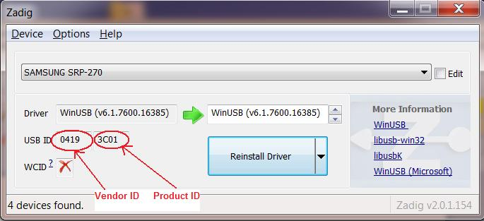
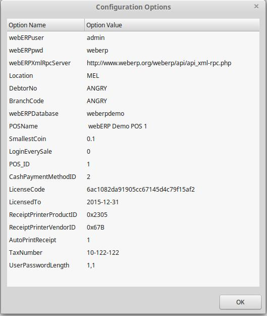
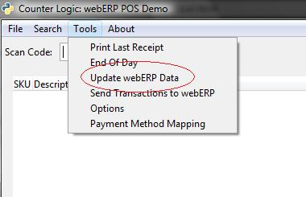
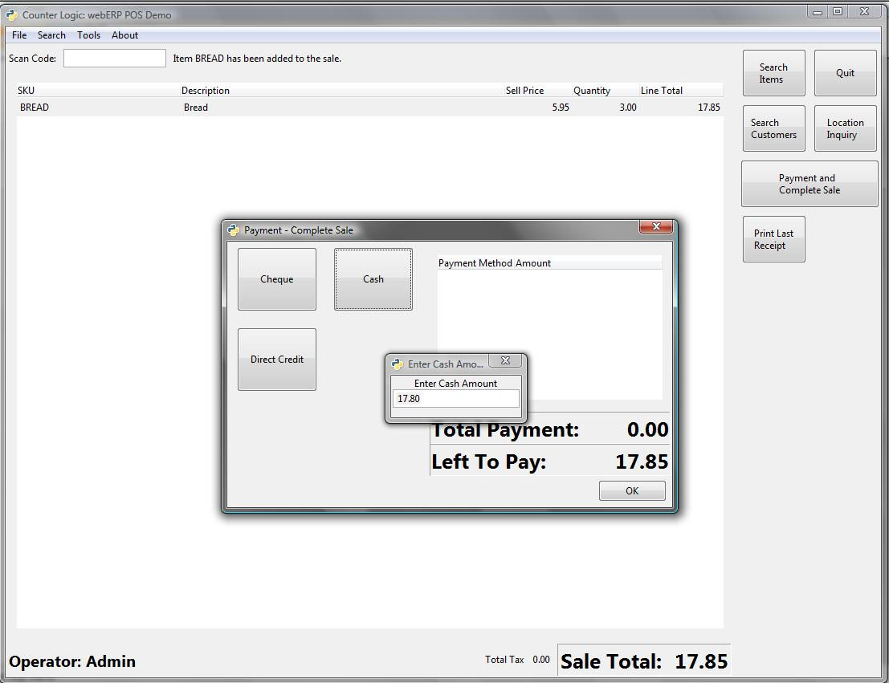

webERP's strengths are it's accessibility from anywhere, it's robust backend accounting, procurement, multi-currency, stock management etc. However, it is plainly unsuitable as the basis for interaction with customers, there is no facility to scan barcodes to enter items into a sale, calculate change, open a cash-drawer, print receipts automatically when a transaction is completed. This is where CounterLogic POS comes in, it has all these facilities expected of a modern Point of Sale system and is completely integrated with webERP. Any number of independent CounterLogic POS systems (lanes) can run simultaneously and together webERP and CounterLogic form an advanced integrated Retail Management System. POS lanes could be installed in any part of the world each operating in different currencies all integrated to a single webERP installation in a truly global and local business. The integrated retail management systems that could currently work under such conditions are very expensive and complex propositions indeed. The back office functions of receiving inventory, entering supplier invoices, printing customer statements, label printing etc can all be done currently from webERP. However, webERP lacks the interactivity that a client side GUI can provide with integration to scanner/printer/cash drawer. webERP also requires continuous connectivity to the web server hosting the webERP installation, this may not always be possible. CounterLogic POS provides the solution to webERP's shortcomings as a customer facing solution. With CounterLogic POS there is no requirement for 24x7 connectivity to the webERP server and it provides a fully interactive, optimised sales terminal that minimises the keying and maximises the accuracy of both sale and cash receipt recording. It is important to note that Counter Logic POS cannot currently deal with webERP's seriliased or controlled items.
CounterLogic POS is an interactive POS system that is completely integrated - data including all inventory items, barcodes, prices, customers etc is retrieved over XML-RPC and sales created are sent back and processed remotely at the webERP server also using XML-RPC. Having retrieved the data from webERP about customers and items/pricing CounterLogic POS is then completely independent. This of course is a fundamental requirement of a POS system and in the absence of an internet connection the POS will cache sales made until the connection is up again. In addition, interactive search facilities are available and connection to local hardware and receipt printers/cash drawers make POS a more efficient operation relative to webERP's native web-based Counter Sales functionality. With customer facing software, the receipt should just print out and the cash drawer open so the customer is not waiting for an operator to click on the web-interface or because of network latency issues. Note that there is no integration into EFTPOS currently and EFTPOS receipts must be keyed into CounterLogic POS. There is an end of day reconciliation of cash/cheques/EFTPOS (in fact any of the payment methods/media defined in webERP) bankings to sales/takings report.
A cash drawer connected to an Epson compatible (ESC/POS) receipt printer and a barcode scanner are required for any efficient POS operation. The web-server running webERP must also have the capability to compress zip files so that the transmission of the data is done efficiently. This requires that the PHP extension to zip files is installed.
Download the latest CounterLogic POS archive from http://www.logicworks.co.nz/Counter-Logic.html - Simply run the downloaded setup program.
To install a receipt printer there is some one off setup required. It is necessary to use a special printer driver which is installed using a utility provided and installed by the setup program. The printer driver installation utility is called Zadig.exe. It will be in C:\Program Files\CounterLogic (or another directory if it installed elsewhere). Run this program from explorer - under options click on devices list with your receipt printer plugged into a USB port.

It can be tricky to identify which device is the receipt printer, so if you pull the USB cord out and have another look the printer should have gone. Make sure you get the correct USB device for the printer and select it. Then select the WinUSB driver (which is the default) and click install. Keep a note of the USB product ID and the vendor ID reported by Zadig as these need to be entered into the CounterLogic options dialog to CounterLogic knows which device is the receipt printer. To enter the product ID and vendor ID of the USB printer into Counter Logic POS, run the POS (login as user "a" with password "a" unless you have already set up an administrative user) and ignore (click through) the warnings about there being no receipt printer attached. Click on Tools->Options to bring up the options dialog box then enter the ProductID and VendorID noted when installing the driver. Ensure you get the ProductID and VendorID around the right way. Logging off from Counter Logic POS and logging back in should see the warnings about no receipt printer gone.
Video showing how to install the printer. Note that a windows driver is not required and should not be installed as this will take over the USB port and prevent the Counter Logic communicating with the printer.
Printer support is provided using "pyusb" - the python USB library to communicate directly with the USB port that the printer is connected to. The pyusb python library and libusb-1.0 needs to be installed on a python installation for CounterLogic POS to work at all. A section of the pythons esc/pos code from Manuel Martinez has been used and incorporated into CounterLogic python scripts. These requirements are all handled by the windows setup script (using the libusbx libusb-1.0.dll which is copied to the windows system folder - the WinUSB driver communicates to the device through libusb-1.0.dll). This set up allows a single code base to be completely platform neutral.
All data for the POS system must be retrieved over xml-rpc from webERP, so before starting it is necessary to configure the POS with the information required to connect to the webERP installation that will then populate the local database with all the data required to process sales - inventory, prices, customers etc.
There is an administrator user defined in the demo database user "a" password "a", login with this account, select Tools -> Options. Here, all the configuration options can be accessed.

It is possible to configure logins to expect any number of characters as a username and a specific number of characters for the password - so the operator does not need to take their hands off the keyboard. Userid of 1 character and password of 1 character is the default but in a live install at least three characters is recommended for user initials and password
Other configuration points:
If you are unable to identify the problem in your configuration then here are some pointers:
Traceback (most recent call last):Then this looks like the xml-rpc call to CreatePOSDataFull is not working - this is the webERP api method to create the zip file of the necessary data to download to the POS. This method code is in the webERP/api/api_webERPSettings.php script and calls a function CreatePOSDataFull which is in turn in includes/Z_POSDataCreation.php. In the Counter Logic code there is a script Z_POS_Data.php that will call this function and create the data archive. Upload this script to the webERP installation and enter the URL to run it http://YourServer/webERP/Z_POS_Data.php enter the parameters and run the POS data creation function. If it fails with the message ERROR Report : Unable to create POS Data file. In most cases a more specific message will be returned identifying why it failed. If this function fails then problem lies with the webERP installation - it is nothing to do with the api configuration.
File "/mnt/old_disk/home/phil/ownCloud/CounterLogic/Linker.py", line 367, in module
MakePOSUploadFile = x_server.weberp.xmlrpc_CreatePOSDataFull(Config['DebtorNo'],Config['BranchCode'],Config['webERPuser'],Config['webERPpwd'])
File "/usr/lib/python2.7/xmlrpclib.py", line 1243, in __call__
return self.__send(self.__name, args)
File "/usr/lib/python2.7/xmlrpclib.py", line 1602, in __request
verbose=self.__verbose
File "/usr/lib/python2.7/xmlrpclib.py", line 1283, in request
return self.single_request(host, handler, request_body, verbose)
File "/usr/lib/python2.7/xmlrpclib.py", line 1316, in single_request
return self.parse_response(response)
File "/usr/lib/python2.7/xmlrpclib.py", line 1491, in parse_response
p.close()
File "/usr/lib/python2.7/xmlrpclib.py", line 567, in close
parser.Parse("", 1) # end of data
xml.parsers.expat.ExpatError: no element found: line 1, column 0
http://weberp.org/weberp/api/api_xml-rpc.php
With the configuration complete and network connectivity to the webERP server confirmed, the local CounterLogic POS database can be populated from the webERP installation by clicking on Tools->Update Data From webERP. This initiates the Linker program to retrieve the data from the webERP install. If the configuration has all been done correctly CounterLogic POS will be populated with the live webERP data automatically. However, if the process fails there is not much feedback on what happened. However, the Linker writes a log of what happened in the data directory data/Linker.log look at this file with a text editor to see what happened. For more detail on what happened the Linker must be run from the command line.

A message will come up on screen showing the program was successful in uploading the necessary data from webERP. As this process can take a long time to complete depending on the size of the data it is really better to run it from a command line, this also then shows the feedback and completion of each stage of the job. Open a windows command window (run - cmd) and:
run cmd
cd C:\Program Files\CounterLogic
Linker.exe fullThis process needs to be run everytime there is an update of customers/inventory items in webERP. This can take quite a bit of time in a large installation (tested with 1.3 million record stockmaster ~20 minuites), so it is best to do it over-night where possible and schedule a job to do it automatically so it never needs to be thought about. It only needs to be done when there are changes to the webERP item master, pricing or new customers etc. If the upload fails there will be no data that will have been updated. A log of the activity of the linker is recorded in Linker.log under the data directory where CounterLogic POS is installed.
This process sends an xml-rpc request to the webERP server to create the POS upload data file and compress it as a zip file for downloading. Once complete, it downloads the file, extracts it and executes the SQL into the CounterLogic database (sqlite). Originally data was retrieved with individual calls to the webERP api but this was too slow for large databases. Preparing the export as an SQL file on the webERP server, compressing it and downloading it onto the POS machine is a much more efficient transport the xml-rpc and the process is very fast by comparison. However, if the webERP database is very large it may be necessary to change the webERP config.php to extend the $MaximumExecutionTime a figure of ~20 minutes (1200 seconds) for the period of time it will take webERP to create the upload file. This time has been shown to cope with a 1.3 million record item database. The webERP web-server must have the zip extension module to php installed to create the compressed download.
From the File Menu select Search Items. Alternatively click the "Search Items" button (or press ALT+I). The search dialog box will open. Enter any character in the search box and the system will search for items where the item code contains this character in any inventory category. Select an inventory category and the search will be reperformed using the character but now only items belonging to the inventory category selected. If the description radio button is selected the search will be redone showing only items where the character occurs anywhere in the description of the item and the the item is in the inventory category selected.
The search is redone each time any entry is made. Double click on any item in the search list (or select the item and click on OK) and it is added automatically to the sale screen.
If the sale is a cash sale then items can be scanned immediately to add them to the sale. However, if the sale is to be charged or a portion of the sale is to be charged to a customer account then the customer must be selected first - if there is specific pricing for the customer defined in webERP then this will then be used for the sale. To select a customer the Select Customer dialog must be opened by clicking the "Select Customer" button - entering any part of the customer code or name will find all those customers in the webERP database (as imported) that match. It is important to realise that only customers in the same currency as the default cash sale customer for this POS will be imported from webERP so it is not possible to do multi-currency sales (A separate CounterLogic POS instance is required for this).
When the sales screen is up, the focus by default is in the scan entry field. Scanning a product code or barcode will add one of the item scanned to the sale, the price is calculated inclusive of the taxes due based on the net price imported from webERP, but plus the tax due based on the customer (or default customer) selection and the tax group of that customer and the tax category of the item - see the webERP documentation for tax calculation. This is all invisible in the POS and just the gross tax inclusive price appears to show the customer total to pay.
If there is no barcode on the product to scan then it is possible to click on "Search Items" to find a specific product. Any part of the code or description can be entered and all the matching items will display. A double click on the item in the search dialog will add it to the sale. The search dialog can then be closed and the sale completed.
Subsequent scans will increment the quantity by 1 of this item, rather than adding new lines.
If the quantity is to be amended it is possible to TAB or click into the grid of items and arrow up and down the list. When the focus is on a row pressing the + key increases the quantity by 1 and pressing the - key reduces the quantity by 1. When the quantity is 0 the system removes it from the grid completely. Pressing delete on a row also removes it from the grid and the sale. To return an item the quantity must be entered as a negative, it is not possible to use the - key to enter a return, the return quantity must be specifically entered as a negative quantity using the keyboard.
If the price is to be amended it is possible to click on the price of the item to be amended the price can then be changed. The tax calculations also alter based on the new gross price - all prices in the POS are assumed to be inclusive of taxes. The sale recalculates (as does the tax behind the scenes). Similarly if the quantity is to be amended for a particular item click on the sale grid quantity field and edit the quantity as needed.
The total amount of the sale and the total amount of tax included in the sale is shown below the entry grid
To complete a sale it is necessary to collect payment from the customer - through any of the payment methods defined on the webERP installation. All these methods will have come down with the data from the webERP upload.

The payment screen shows a button for each of the webERP payment methods and the relevant button must be clicked to enter an amount against that payment method. When one of the payment method buttons are clicked CounterLogic POS assumes that the entire amount of the sale is assumed to be being paid and the amount defaulted accordingly. If only part of the sale is being paid using this payment method then the amount must be changed before hitting enter. Clicking another payment method will assume that the entire balance is being paid and so on. Any number of payment methods can be used to settle a sale. If the sale is to a customer other than the default POS customer then an additional button will display for the amount to charge to the customers account - i.e. no payment is to be made today. If the account is to be charged (and no other payment method is selected) then the cash drawer will not open. Any combination of payment methods can be used. If the total of all payments entered exceeds the amount of the sale then the cash drawer will open on completion and a dialogue will show the amount of change to be given. The amount of change to be given will factor in the smallest denomination coin (set in the configuration options), so that only a valid amount of change will be shown. If the configuration is set to print receipts with each sale then a receipt for the sale will print to the default printer. There is an option to print the last receipt from the menu irrespective of whether the auto print receipt feature is active or not. Many customers do not require a receipt so tuning auto receipt printing off will save on paper.
Warning: On sending the sale to webERP an order is created for each customer transaction for all transactions that have not already been sent to webERP. An invoice is created for each transaction and referenced back to the POS transaction in the customerref field in webERP. However, the invoice is created in webERP using the webERP logic for the lines of the invoice using the logic and data as at the time of the import, so if the data in webERP has changed since the data that the POS had at the time of the sale then it is possible that the tax might be calculated differently. The net price comes accross from the POS with the order, but the tax group of the customer and the tax authority rates etc will all be as per the last import from webERP into the POS as at the time of the POS sale. Since this data is quite static the risk of changes are small and thus acceptable. However, when tax rates change it is very important to ensure that data is sent to webERP before the change, then the new rates updated in webERP, immediately downloaded into the POS before any new transactions. Happily tax rates do not change frequently and this will rarely be an issue for anyone.
Windows:
run cmd
>cd C:\Program Files\CounterLogic
>Linker.exe full
Windows:
run cmd
>cd C:\Program Files\CounterLogic
>Linker.exe send
Running the Linker.exe from a command window shows the progress of the action with output messages - there is no indication of what is going on when run from the GUI. However, the Linker.exe does create a Linker.log file in the CounterSales\data folder which is a text file showing the activity. With the full parameter all the webERP data required for the POS is refreshed. If the "send" parameter is used then all the new transactions are sent to webERP and allocated to each other where possible using the webERP XML-RPC api calls. The rationale for making it possible to run this program from the command line is so that it can be scheduled to run in the background to automatically ensure all transactions are propogated to webERP without any user intervention. By running it from a command line any error messages are shown in the command window.
The linker requires a valid license to work - please contact support@logicworks.co.nz to purchase a license. All licenses are time limited. It will actually work without a valid licence just once so it is possible to see CounterLogic POS in action with the business's data without purchasing a licence. However, it is not then possible to use the linker again until a licence is purchased. The point of sale is really only useful in conjunction with your live webERP data so is actually useless without the linker.
The communication with the webERP web-server over XML-RPC is handled by a separate "Linker.exe" program that can run in the background and be set to syncronise sales made at the POS with webERP every X number of minutes. This program also handles the uploading of the latest webERP data for customers and items on periodic basis. It is also possible to run the linker full upload from the main POS menu directly. Syncronisation of sales must be done through the linker and the linker can be invoked to send transactions directly from the CounterLogic POS screen.
CounterLogic is developed in the popular scripting language, Python using the GTK (Gimp Tool Kit) GUI widgets. The POS can be used under Windows or Linux. A windows .exe can be downloaded from http://www.logicworks.co.nz/Counter-Logic.html. Note also that because CounterLogic POS uses the webERP API, and this API has been extended to cope with the requirements of CounterLogic POS, it is important that webERP version 4.08.2 or greater is being used.
The application can run in either Chinese or English. To make another translation take the file under Languages\en_GB\LC_MESSAGES\messages.pot and make a new directory under the Languages directory with your country locale code eg de_DE for German and copy this file under a sub-directory LC_MESSAGES with the extension .po. Edit the file to include your transactions for each of the strings in this file - a process needs to be run on the transalated messages.po file to convert it to an indexed binary format that can be used (if you have the gettext tools run msgfmt messages.po to create the new messages.mo). Since the application only consists of a few screens it is not a big job to translate it. Submit the translation to support@logicworks.co.nz and a version for your language will be produced. With a translation file it is trival for us to alter the program to use your new translation
If there is a problem running CounterLogic run it directly from a command line as the terminal will show useful information to determine where the problem lies. Open a terminal window:
Please report issues copying the output in the command window/terminal screen to support@logicworks.co.nz
Ensure python 2.7 is installed from a terminal:
sudo apt-get pythonAs of Linux Mint Oliva (15) the python-usb package is old and the latest pyserial and pyusb for libusb-1.0 must be installed from:
sudo apt-get python-gtk2-dev
sudo python setup.py install
Now download and install pyserial
Python serial module is required for integration with serial EFTPOS terminals
When CounterLogic POS is run without a receipt printer attached a message shows that there is no receipt printer - and therefore CounterLogic with not be able to open a cashdrawer - as this happens through sending control codes to the receipt printer. To identify the printer it is necessary to see the devices connected to the USB interface from a terminal type:
lsusb
By plugging the USB printer in and running the above command it should be possible to identify the printers ID and vendor ID. The output of lsusb is typically:
Bus 001 Device 002: ID 8087:0024 Intel Corp. Integrated Rate Matching Hub
Bus 002 Device 002: ID 8087:0024 Intel Corp. Integrated Rate Matching Hub
Bus 001 Device 001: ID 1d6b:0002 Linux Foundation 2.0 root hub
Bus 002 Device 001: ID 1d6b:0002 Linux Foundation 2.0 root hub
Bus 001 Device 003: ID 064e:a302 Suyin Corp.
Bus 001 Device 005: ID 0cf3:3005 Atheros Communications, Inc. AR3011 Bluetooth
Bus 002 Device 003: ID 046d:c52e Logitech, Inc.lsusb
In the above example the USB receipt printer is
Bus 002 Device 003: ID 046d:c52e Logitech, Inc.lsusbThe Device Product ID is therefore: 046d
These parameters must be set up in Counter Logic POS configuration to identify the USB device that is the printer - see below. The printer driver for any ESC/POS receipt printer is already defined inside Counter Logic POS. No other work is required to set up the printer.